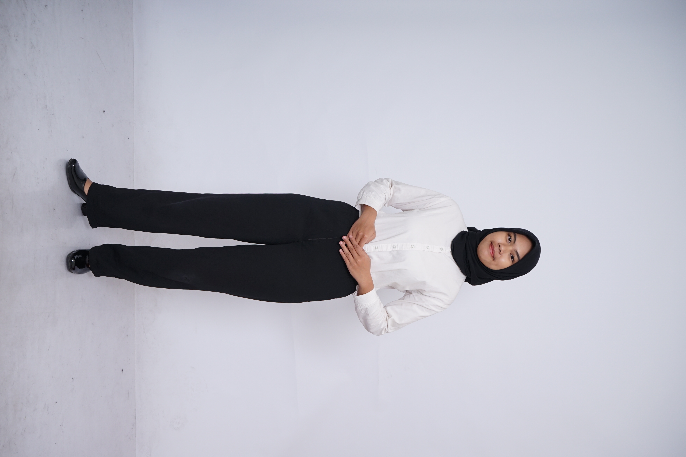
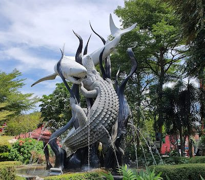
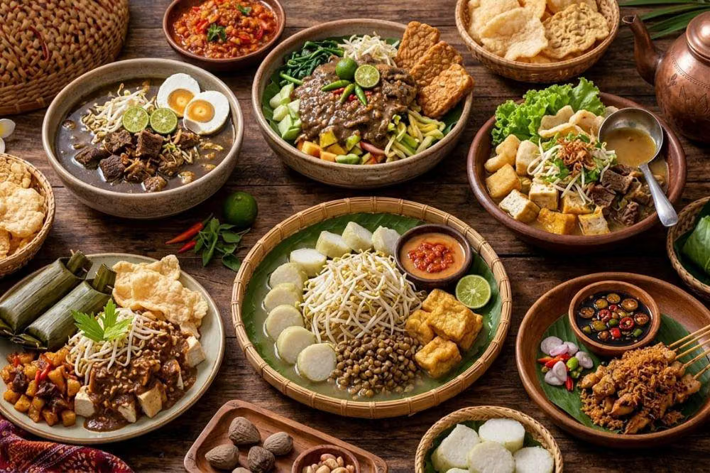
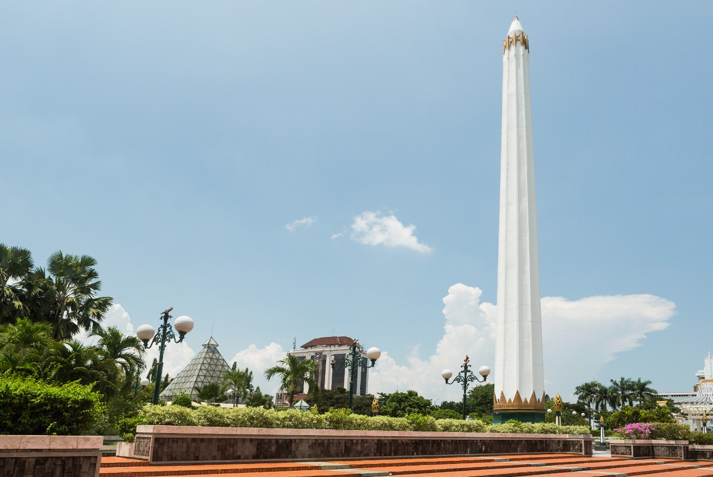

Personal Website
Hi, I'm Salsabila Hana Adniah, welcome to my personal website.
A small static site built with HTML, CSS & JavaScript, sharing a bit about myself and my hometown, Surabaya, its story, its food, and the places worth visiting.
What you'll find here
Four short stops that make up this site.

Profile
Who I am, what I study, and what I'm interested in.

Hometown
A short introduction to Surabaya, the City of Heroes.

Local Food
Signature dishes that define Surabaya's food scene.

Tourist Places
Landmarks and spots worth visiting around the city.